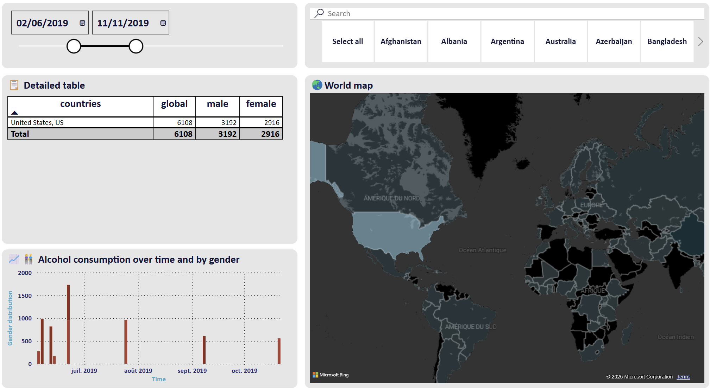

World alcohol consumption
PowerBI · PowerQuery · Kaggle
üìä During the holidays, I created, on a whim, a dashboard in Power BI using a dataset available on Kaggle. It contains data on population consumption, categorized by gender, country, and date.
üìÅ The dataset, which is quite small and simple, did not allow for in-depth analysis. However, I enriched the data by scraping to add a new parameter: the population of each country included in the dataset. This allowed me to create a üåç world map displaying the countries with the highest alcohol consumption proportionally to their population.
✅ In the end, this dashboard offers:
1Ô∏è‚É£ The ability to search for a country using a search bar to display daily alcohol consumption by gender.üîç
2Ô∏è‚É£ The option to explore data by clicking on a country in the table or directly on the world map.üåü
